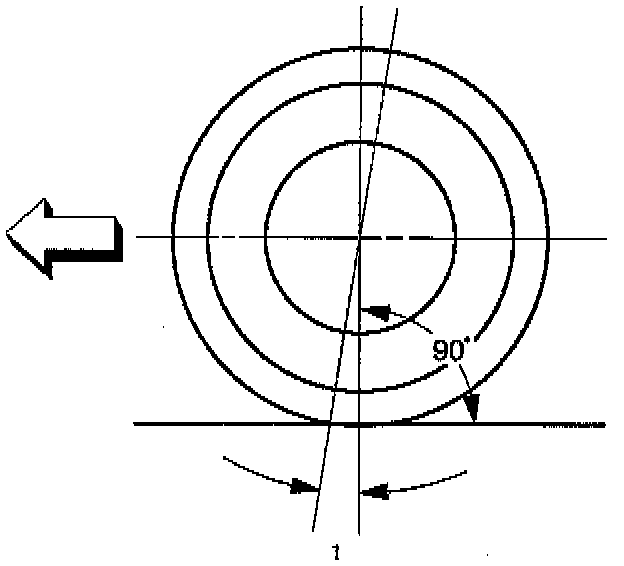

Caster

This illustration is viewed from the side of the vehicle. Caster (1) is the vertical tilting of the wheel axis either forward or backward (when viewed from the side of the vehicle). A backward tilt is positive (+) and a forward tilt is negative (-). On the short and long arm type suspension you cannot see a caster angle without a special instrument, but if you look straight down from the top of the upper control arm to the ground, the ball joints do not line up (fore and aft) when a caster angle other than 0 degree is present. With a positive angle, the lower ball joint would be slightly ahead (toward the front of the vehicle) of the upper ball joint center line.